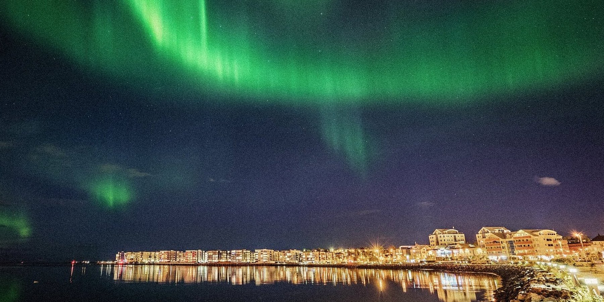
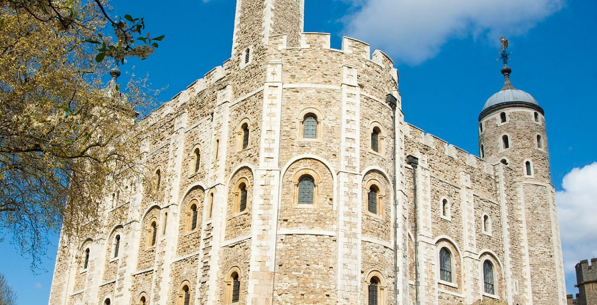

페이지 목차
개요
대학생 종강은 7월부터!!
종강하면 힐링 해야죠.
집에만 있지 말고 여행이라도 떠나볼까요?
아래의 여행지 리스트는 트립어드바이저에서 다음번 휴가를 위한 인기 여행지 리스트에서 뽑았습니다.
전국 여행지 목록 (from. 트립어드바이저)
여행지 상세 정보
| 대표이미지 | 장소 | 즐길거리 | 위치 | 소개 |
|---|---|---|---|---|
 |
로마 | 콜로세움, 판테온, 트레비 분수 | 이탈리아 | 온 도시에 유적이 있고, 거의 모든 광장에 걸작 조각이 있으며, 맛있는 음식이 있다. |
 |
파리 | 에펠 탑, 루브르 박물관, 개선문 | 프랑스 | 로맨틱한 휴가를 보낼 수 있는 도시. 거대한 석재와 연철로 지어진 건물, 센강의 강둑은 영화의 한 장면 같다. |
 |
라스베이거스 | 벨라지오 분수, high roller, 레드 록 캐니언 국립 보존 지구 | 미국 | 미슐랭 맛집, 24시간 결혼식장, 거대하고 아름다운 시가지, 슬롯머신까지 볼 수 있다. 유흥을 즐기지 않는 이들과 가족을 위한 여행지로도 사랑받고 있다. |
|  | 레이캬비크 | sun voyager, hallgrimskirkja, laugavegur | 아이슬란드 | 게이시르 간헐천 지대, 굴포스 폭포, 팅크베틀리르 국립공원을 비롯한 대자연으로 떠나는 모험의 관문이다. 아이슬란드 문화의 정취를 느끼며 며칠간 여행을 즐길만한 도시이다. |
|  | 런던 | 런던 타워, 셰익스피어 글로브 시어터, 세인트 폴 대성당 | 영국 | 예술, 역사, 문화 등 분야를 가리지 않고 모든 것의 중심에 있는 거대한 도시이다. 지역마다 고유한 분위기가 있다는 차별점이 있다. |